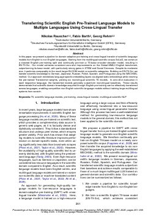
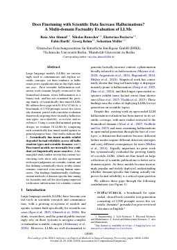
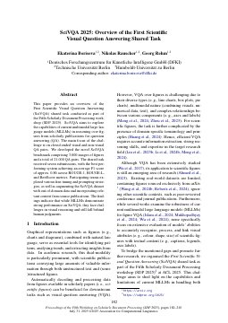
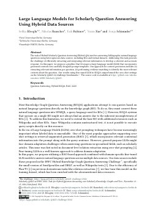
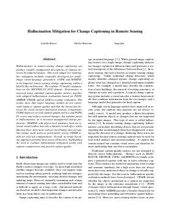

Transferring Scientific English Pre-Trained Language Models to Multiple Languages Using Cross-Lingual Transfer
Natural Scientific Language Processing Workshop at LREC 2026

Natural Scientific Language Processing Workshop at LREC 2026


Scholarly Document Processing Workshop at ACL 2025

Scholarly QALD Challenge at ISWC 2024 (system paper)

Remote Sensing Image Analysis, TU Berlin · 2026
Our SciFactCheck paper appeared in the EMNLP 2026 proceedings.
Our scientific T5 paper appeared at the NSLP workshop at LREC 2026.